二訪北國的熱鬧補考（上）：支笏湖、登別地獄谷與遲來兩年的百萬夜景
二訪北國的熱鬧補考（上）：支笏湖、登別地獄谷與遲來兩年的百萬夜景
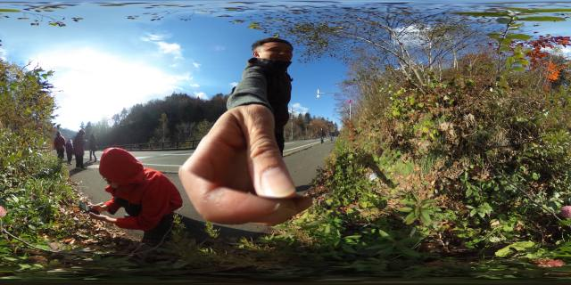
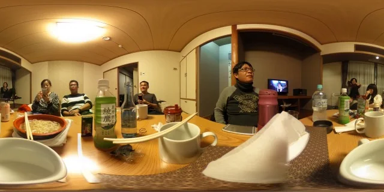
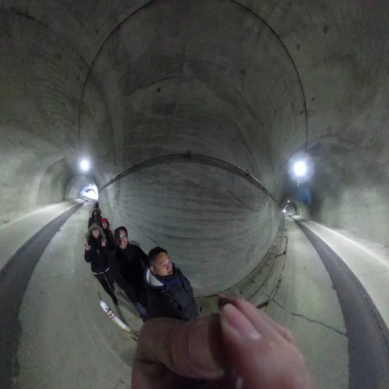
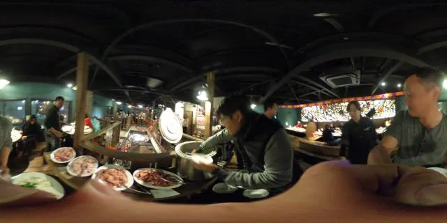
2026/10 更新（原旅程時間：2016 年 10 月下旬）
🧭 2016 北海道員旅系列導覽：
▸ 【上篇】道南篇：支笏湖、登別地獄谷與函館百萬夜景補考（Day 1–2） （本篇）
▸ 【下篇】道央篇：大沼零進展、定山溪初雪大谷夜與狸小路爆買（Day 3–5） ➔
這篇是 2016 年深秋第二次參加公司北海道員工旅遊的完整紀錄。如果把 2014 年第一次北海道員工旅遊 擺在一起看，路線幾乎是同一套道南加道央的經典模板（登別、函館、大沼、定山溪、小樽、札幌），但裡頭的空氣、心境與同行的人，有大大不同。
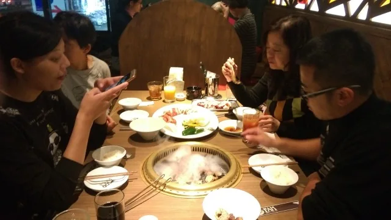
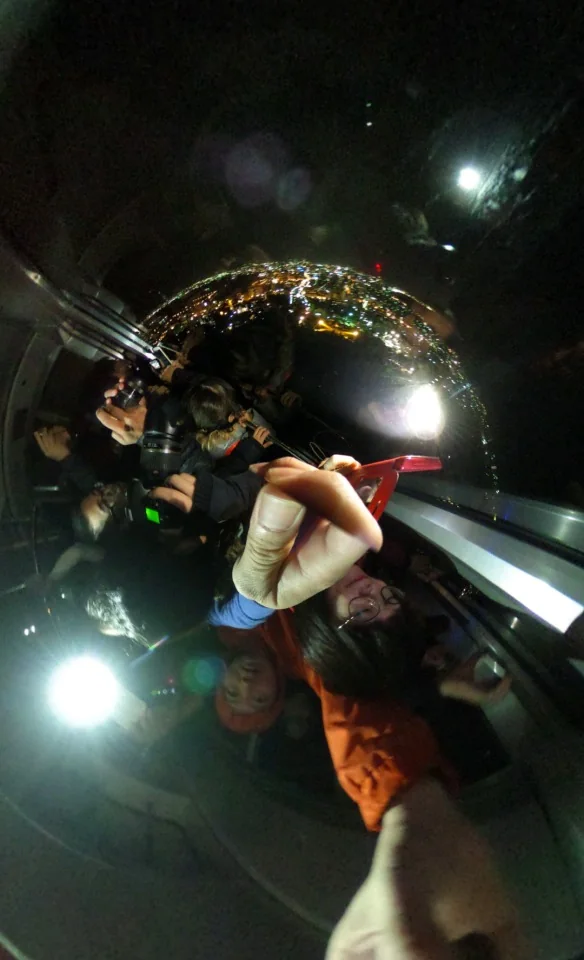
📌 2014 初訪 vs. 2016 二訪北海道旅遊見解與現況更新：
1. 跟團的人數與體感哲學：2014 年初訪時入職剛滿一年，部門只有我一個單男報名，意外賺到四晚「一人獨享大和室」的孤獨紅利，走在寒涼湖邊想的是離世滿一年的摯友與未定的職涯；到了 2016 年二訪，入職滿三年，同事揪團人數大躍進，從一個人的湖畔坐禪變成了一群人在溫泉飯店「2 人睡 4 床」、半夜酒聚評比清酒與分食鹽味拉麵的哄堂大笑。
2. 季節微差（10 月底 vs. 11 月中）：10 月下旬的道南（支笏湖、大沼公園、五稜郭）還能抓住深秋紅葉與藍天的尾巴，不像 11 月中旬已全面入冬蕭瑟；同時也能在定山溪山區剛好遇上入冬第一場「毛毛初雪」，是視覺層次最豐富的時節。
3. 重要景點現況提醒（出發前必看）：當年最後一天必逛的「千歲 Outlet Mall Rera（レラ）」已於 2024 年 11 月正式結束營業；新千歲機場內的「哆啦A夢空中樂園（ドラえもん わくわくスカイパーク）」亦於 2025 年 7 月閉館。目前新千歲機場前的購物主力已全面轉移至三井 Outlet Park 札幌北廣島。
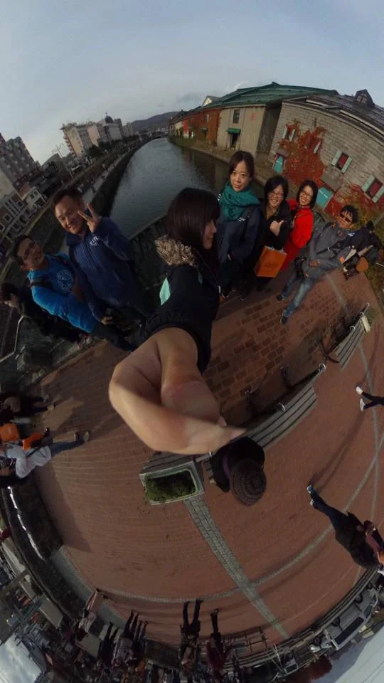
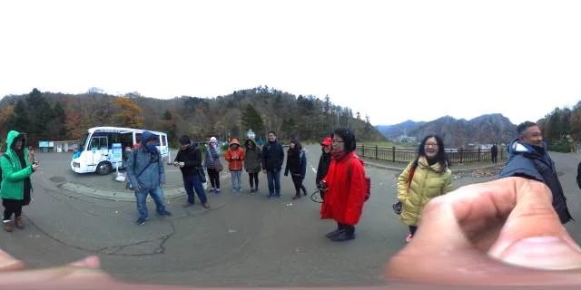
Day 1：人數大躍進的出發、支笏湖秋色與登別地獄谷
兩年前在桃園機場二航廈，同部門只有我一個人出行；兩年後再度站在第二航廈，這回是浩浩蕩蕩的「這次的人數大躍進 員工旅遊」。光是從排隊 check-in、機場櫃檯報到開始，身邊就全是笑鬧聲。
落地新千歲後，第一站先拉車前往支笏湖。一下車被北國清冽的冷空氣一激，「霎時 有種活著的感覺」！在湖畔痛快掏出日幣貢獻了這趟旅程「花的第一筆（一定要打卡）」，10 月底的支笏湖還留著迷人的深秋葉色，順道在某個瀑布點前（三段瀑布）散步放風。雖然出發時火氣大有點嘴巴破，但灌一口日本販賣機必買的綾鷹綠茶，整個人瞬間舒坦。
傍晚進到登別，走訪冒著白煙與硫磺味的北海道登別地獄谷（日本一）。經過兩年前第一晚一個人住過的「名湯之宿 雅亭」時特別有感，而這次我們改住附近的「登別溫泉 萬世閣」，晚上泡完湯，照例開啟第一晚的萬世閣夜宵賞味時光。
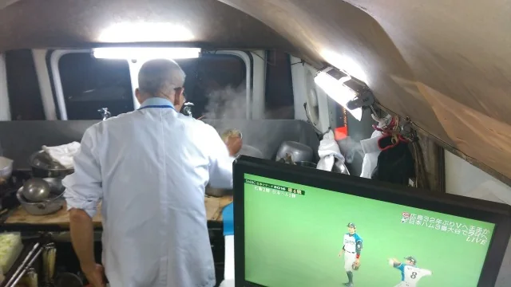
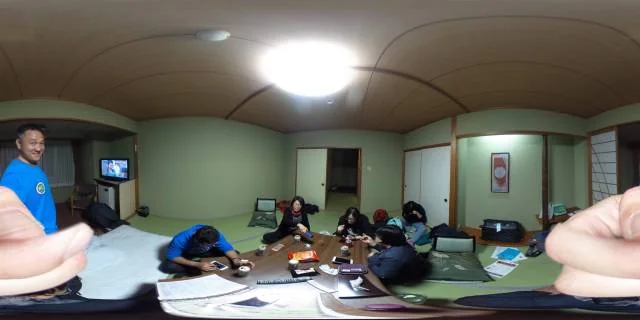
Day 2：洞爺湖、昭和新山，與遲來兩年的「函館山百萬夜景」補考成功
第二天一早在登別溫泉萬世閣享用朝食，趁著晨光再去感受一下白煙裊裊的「溫暖地獄谷」。值得一提的是，這趟旅程我們這群人自動自發組成了一個「所謂的・總是離導遊定點開講時很遠的隊」——導遊在前面拿小旗子講古，我們永遠在隊伍最外圍自己拍自己的（包含嘉真與本人的認證照）。而且就在這趟旅程穿梭景點的別團人潮裡，我竟然一眼認出了 2014 年帶我們團的領隊「可樂龍」李金龍大哥！時隔兩年在北海道異地重逢，實在太奇妙。
遊覽車一路往洞爺湖與昭和新山推進。從車窗中位看出去的昭和新山青年旅舍（ユスホステル）居景視野極佳；到了洞爺湖八景，看著枝頭被秋風吹落的枯枝，隨手拍下了一張名為「孤寂到葉子都離開了」的佳作。在昭和新山午食候吃飽喝足，南下途經長萬部駅，還遇到了想搭便車的瓢蟲與金龜子。
下午進到函館，先造訪莊嚴清幽的トラピスチヌ（特拉普派）女子修道院，人手一支號稱全北海道最濃郁的修道院霜淇淋（濃到讓人懷疑「這冰不是還在嘴巴裡嗎」）；接著轉往港邊的金森紅磚倉庫，在 Snaffles 享用半熟起司蛋糕 Afternoon Tea。
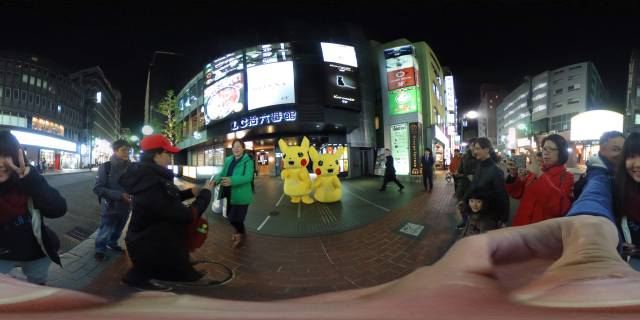
📌 函館女子修道院旁「市民之森」霜淇淋與 Snaffles：特拉普派女子修道院（トラピスチヌ修道院）創立於 1898 年，是日本第一座女子修道院。院區外的「市民之森」賣店販售的牛奶霜淇淋，以北海道道南生乳與高乳脂比例製成，口感綿密厚實如奶油，是北海道旅遊公認的殿堂級霜淇淋；而金森倉庫內的「Pastry Snaffles」則以入口即化的「Catchcakes（チーズオムレット）」半熟起司蛋糕聞名。
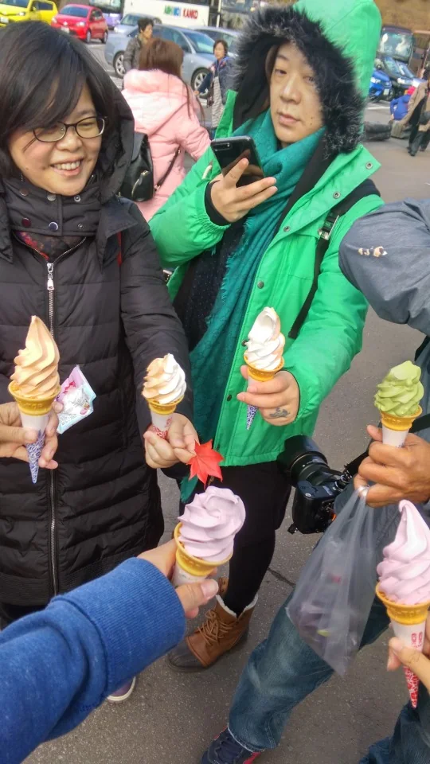
天色漸暗，在金森倉庫整隊準備登函館山纜車。還記得 2014 年那次 遇上傾盆大雷雨，百萬夜景直接變成「小七＋吉野家配日米野球」；這回搭上纜車直達函館山展望台，雙C海灣夾著璀璨燈火完整攤在眼前——「ahhrr 百萬夜景 來著」！連拍了好幾張函館夜景（百萬夜景 1、百萬夜景 2），遲了兩年的學分，這晚終於高分補考通過。
當晚入住函館湯之川的 Imagine Hotel & Resort（イマジン ホテル＆リゾート函館）。明明才剛在飯店吃完晚餐，一群人「啊不是剛吃飽出來逛」，結果又鑽進巷弄裡的「阿公店拉麵（爺爺拉麵）」，點了碗熱騰騰的阿公店鹽味拉麵一人吃一口。回房後正式開啟房間酒聚，把北海道名酒「男山」跟新潟「菊水」擺在一起盲測，結論是：「男山，還是菊水好」！席間有人一直開閃光燈拍照，電視裡還播著讓人分不清是「在韓國學英文、還是在日本學韓語」的奇妙節目。
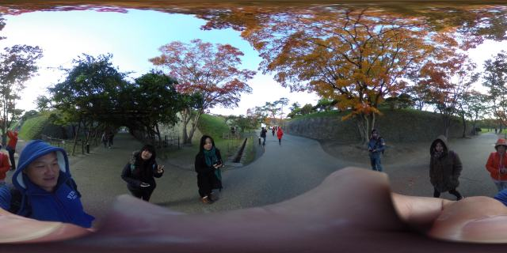
👉 接續閱讀：【下篇】大沼零進展、定山溪初雪大谷夜與狸小路爆買（Day 3–5）➔
READING PATH / 從這篇出發
把故事接起來讀
北海道：2014 初訪與 2016 再訪
把當年的員工旅遊紀錄、回看行程表的文字，以及兩年後的再訪放在一起。年份依正文記載，並非下方的發表日期。
- 前一段2014 回看｜一張行前說明表的記憶
同一次初訪，從多年後翻出行前資料的角度再看。
- 下一段2016 再訪（下）｜大沼、定山溪、札幌與小樽
接續同一次再訪的第三至第五天。